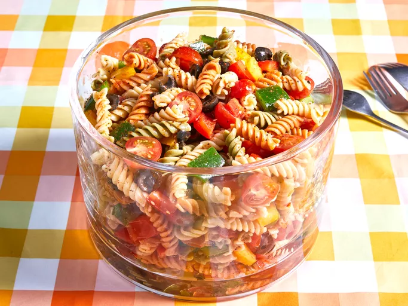

Pasta salad

Ingredients
-
Pasta: This colorful, top-rated pasta salad starts with one pound
of tri-colored spiral pasta.
-
Dressing: Use a bottle of store-bought Italian-style dressing or,
if you want to go the extra mile, make your own at home.
-
Seasoning mix: Salad seasoning mix lends tons of savory flavor.
-
Vegetables: You’ll need cherry tomatoes, three bell peppers
(green, yellow, and red), and a can of black olives.
Preparation Steps
- Cook and drain the pasta.
- Whisk the dressing with the seasoning mix.
-
Combine the pasta with the vegetables, then toss in the seasoned
dressing.